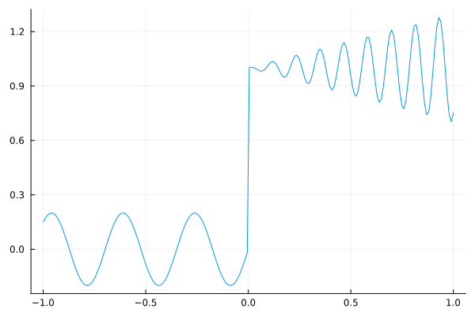
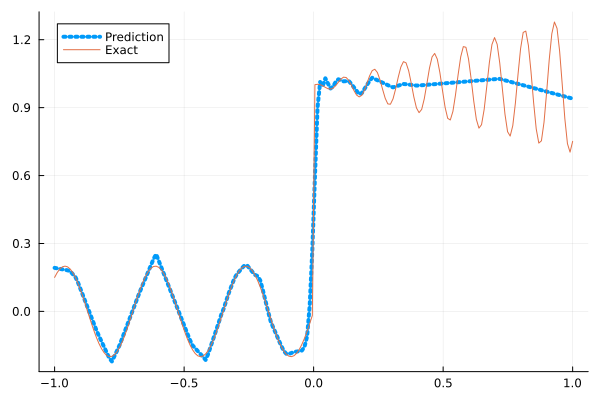
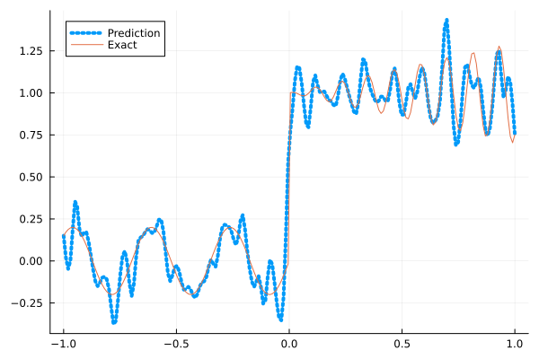
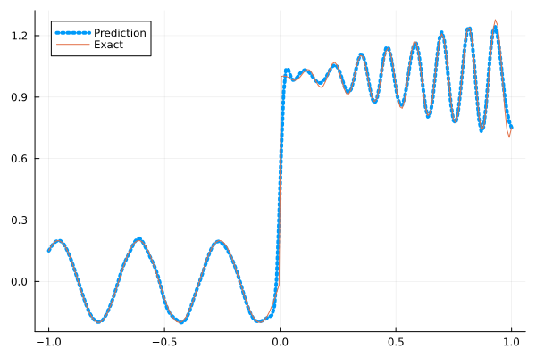
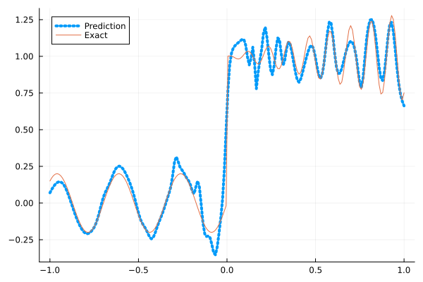
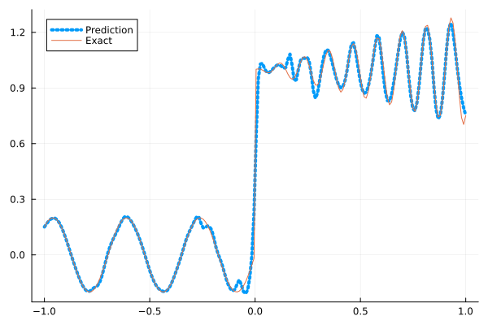

Fitting a nonlinear discontinuous function
This example is taken from here. However, we do not use adaptive activation functions. Instead, we show that using suitable non-parametric activation functions immediately performs better.
Consider the following discontinuous function with discontinuity at $x=0$:
\[u(x)= \begin{cases}0.2 \sin (18 x) & \text { if } x \leq 0 \\ 1+0.3 x \cos (54 x) & \text { otherwise }\end{cases}\]
The domain is $[-1,1]$. The number of training points used is 50.
Import pacakges
using Lux, Sophon
using NNlib, Optimisers, Plots, Random, StatsBase, ZygoteDataset
function u(x)
if x <= 0
return 0.2 * sin(18 * x)
else
return 1 + 0.3 * x * cos(54 * x)
end
end
function generate_data(n=50)
x = reshape(collect(range(-1.0f0, 1.0f0, n)), (1, n))
y = u.(x)
return (x, y)
endgenerate_data (generic function with 2 methods)Let's visualize the data.
x_train, y_train = generate_data(50)
x_test, y_test = generate_data(200)
Plots.plot(vec(x_test), vec(y_test),label=false)
Naive Neural Nets
First we demonstrate show naive fully connected neural nets could be really bad at fitting this function.
model = FullyConnected((1,50,50,50,50,1), relu)Chain(
layer_1 = Dense(1 => 50, relu), # 100 parameters
layer_2 = Dense(50 => 50, relu), # 2_550 parameters
layer_3 = Dense(50 => 50, relu), # 2_550 parameters
layer_4 = Dense(50 => 50, relu), # 2_550 parameters
layer_5 = Dense(50 => 1), # 51 parameters
) # Total: 7_801 parameters,
# plus 0 states.Train the model
function train(model, x, y)
ps, st = Lux.setup(Random.default_rng(), model)
opt = Adam()
st_opt = Optimisers.setup(opt,ps)
function loss(model, ps, st, x, y)
y_pred, _ = model(x, ps, st)
mes = mean(abs2, y_pred .- y)
return mes
end
for i in 1:2000
gs = gradient(p->loss(model,p,st,x,y), ps)[1]
st_opt, ps = Optimisers.update(st_opt, ps, gs)
if i % 100 == 1 || i == 2000
println("Epoch $i || ", loss(model,ps,st,x,y))
end
end
return ps, st
endtrain (generic function with 1 method)Plot the result
@time ps, st = train(model, x_train, y_train)
y_pred = model(x_test,ps,st)[1]
Plots.plot(vec(x_test), vec(y_pred),label="Prediction",line = (:dot, 4))
Plots.plot!(vec(x_test), vec(y_test),label="Exact",legend=:topleft)Epoch 1 || 0.16548468096207855
Epoch 101 || 0.017451373280736947
Epoch 201 || 0.01590726682039123
Epoch 301 || 0.015020195938935136
Epoch 401 || 0.013936055140662313
Epoch 501 || 0.013239676265548226
Epoch 601 || 0.012919915603191025
Epoch 701 || 0.012781828245219668
Epoch 801 || 0.012583379087849834
Epoch 901 || 0.012317625932997244
Epoch 1001 || 0.011810960432658254
Epoch 1101 || 0.011051036439477102
Epoch 1201 || 0.009746229792755953
Epoch 1301 || 0.008509948016566625
Epoch 1401 || 0.007687559584133581
Epoch 1501 || 0.007499029756374203
Epoch 1601 || 0.007383616202945306
Epoch 1701 || 0.0074491016218777685
Epoch 1801 || 0.007327568093566379
Epoch 1901 || 0.007336529312068514
Epoch 2000 || 0.007346136529515415
13.385842 seconds (12.82 M allocations: 1.447 GiB, 6.20% gc time, 91.33% compilation time)
Siren
We use four hidden layers with 50 neurons in each.
model = Siren(1,50,50,50,50,1; omega = 30f0)Chain(
layer_1 = Dense(1 => 50, sin), # 100 parameters
layer_2 = Dense(50 => 50, sin), # 2_550 parameters
layer_3 = Dense(50 => 50, sin), # 2_550 parameters
layer_4 = Dense(50 => 50, sin), # 2_550 parameters
layer_5 = Dense(50 => 1), # 51 parameters
) # Total: 7_801 parameters,
# plus 0 states.@time ps, st = train(model, x_train, y_train)
y_pred = model(x_test,ps,st)[1]
Plots.plot(vec(x_test), vec(y_pred),label="Prediction",line = (:dot, 4))
Plots.plot!(vec(x_test), vec(y_test),label="Exact",legend=:topleft)Epoch 1 || 1.1556061844339347
Epoch 101 || 0.0012345964964511052
Epoch 201 || 6.211238332058101e-5
Epoch 301 || 2.0509306967744203e-6
Epoch 401 || 4.1027956795679796e-8
Epoch 501 || 6.211866542391803e-10
Epoch 601 || 9.232623345704749e-12
Epoch 701 || 5.754975979803431e-13
Epoch 801 || 1.4629519592924453e-13
Epoch 901 || 5.58574921478845e-14
Epoch 1001 || 3.9974970207713407e-14
Epoch 1101 || 4.606532108086449e-14
Epoch 1201 || 6.548937443640394e-14
Epoch 1301 || 5.361810895445973e-14
Epoch 1401 || 6.045650975572016e-14
Epoch 1501 || 7.023055318862433e-14
Epoch 1601 || 5.041523944649716e-14
Epoch 1701 || 5.105707581825911e-14
Epoch 1801 || 3.866377104765182e-14
Epoch 1901 || 4.493384393559692e-14
Epoch 2000 || 3.1278051833749354e-14
6.808929 seconds (7.67 M allocations: 1.252 GiB, 7.78% gc time, 80.16% compilation time)
As we can see the model overfits the data, and the high frequencies cannot be optimized away. We need to tunning the hyperparameter omega
model = Siren(1,50,50,50,50,1; omega = 10f0)Chain(
layer_1 = Dense(1 => 50, sin), # 100 parameters
layer_2 = Dense(50 => 50, sin), # 2_550 parameters
layer_3 = Dense(50 => 50, sin), # 2_550 parameters
layer_4 = Dense(50 => 50, sin), # 2_550 parameters
layer_5 = Dense(50 => 1), # 51 parameters
) # Total: 7_801 parameters,
# plus 0 states.@time ps, st = train(model, x_train, y_train)
y_pred = model(x_test,ps,st)[1]
Plots.plot(vec(x_test), vec(y_pred),label="Prediction",line = (:dot, 4))
Plots.plot!(vec(x_test), vec(y_test),label="Exact",legend=:topleft)Epoch 1 || 0.45158376653737187
Epoch 101 || 0.006283571707991578
Epoch 201 || 0.0046028606436407556
Epoch 301 || 0.0034759062749450064
Epoch 401 || 0.0025301956797950226
Epoch 501 || 0.0018284671092849425
Epoch 601 || 0.0011872856907141514
Epoch 701 || 0.0006544028904640274
Epoch 801 || 0.00034983393084788637
Epoch 901 || 0.00020049145959871145
Epoch 1001 || 0.0001244286166016871
Epoch 1101 || 8.443590393337336e-5
Epoch 1201 || 6.343212273704759e-5
Epoch 1301 || 5.196606257338012e-5
Epoch 1401 || 4.500942363690349e-5
Epoch 1501 || 4.276311706085913e-5
Epoch 1601 || 3.512692130432766e-5
Epoch 1701 || 3.12281925704511e-5
Epoch 1801 || 2.7706413627076e-5
Epoch 1901 || 2.4250297553758342e-5
Epoch 2000 || 2.700908927814205e-5
1.237262 seconds (1.15 M allocations: 892.471 MiB, 8.84% gc time)
Gaussian activation function
We can also try using a fully connected net with the gaussian activation function.
model = FullyConnected((1,50,50,50,50,1), gaussian)Chain(
layer_1 = Dense(1 => 50, gaussian), # 100 parameters
layer_2 = Dense(50 => 50, gaussian), # 2_550 parameters
layer_3 = Dense(50 => 50, gaussian), # 2_550 parameters
layer_4 = Dense(50 => 50, gaussian), # 2_550 parameters
layer_5 = Dense(50 => 1), # 51 parameters
) # Total: 7_801 parameters,
# plus 0 states.@time ps, st = train(model, x_train, y_train)
y_pred = model(x_test,ps,st)[1]
Plots.plot(vec(x_test), vec(y_pred),label="Prediction",line = (:dot, 4))
Plots.plot!(vec(x_test), vec(y_test),label="Exact",legend=:topleft)Epoch 1 || 0.29288477060251694
Epoch 101 || 0.005295784197054315
Epoch 201 || 0.004171251031441218
Epoch 301 || 0.0026853819384554845
Epoch 401 || 0.0009540373222688093
Epoch 501 || 0.00010346141945164553
Epoch 601 || 2.682709856301415e-6
Epoch 701 || 4.091452967881655e-6
Epoch 801 || 1.2704944629240606e-6
Epoch 901 || 1.996965881671899e-8
Epoch 1001 || 2.0739250143263584e-10
Epoch 1101 || 5.882118275401943e-7
Epoch 1201 || 8.00490061717722e-11
Epoch 1301 || 1.3254122348652536e-6
Epoch 1401 || 1.772060441529918e-8
Epoch 1501 || 3.3531765779577464e-11
Epoch 1601 || 0.00010241832509526892
Epoch 1701 || 5.222627686925673e-9
Epoch 1801 || 1.3359200962909688e-6
Epoch 1901 || 3.6331148563621524e-11
Epoch 2000 || 0.0035990454928636908
6.264715 seconds (6.82 M allocations: 1.207 GiB, 7.23% gc time, 75.92% compilation time)
Quadratic activation function
quadratic is much cheaper to compute compared to the Gaussain activation function.
model = FullyConnected((1,50,50,50,50,1), quadratic)Chain(
layer_1 = Dense(1 => 50, quadratic), # 100 parameters
layer_2 = Dense(50 => 50, quadratic), # 2_550 parameters
layer_3 = Dense(50 => 50, quadratic), # 2_550 parameters
layer_4 = Dense(50 => 50, quadratic), # 2_550 parameters
layer_5 = Dense(50 => 1), # 51 parameters
) # Total: 7_801 parameters,
# plus 0 states.@time ps, st = train(model, x_train, y_train)
y_pred = model(x_test,ps,st)[1]
Plots.plot(vec(x_test), vec(y_pred),label="Prediction",line = (:dot, 4))
Plots.plot!(vec(x_test), vec(y_test),label="Exact",legend=:topleft)Epoch 1 || 0.2777214479872399
Epoch 101 || 0.006265995136807061
Epoch 201 || 0.005210862546015764
Epoch 301 || 0.004370879574893997
Epoch 401 || 0.00357643075656171
Epoch 501 || 0.0022317465971262575
Epoch 601 || 0.0006412708707967209
Epoch 701 || 0.00014601891501182977
Epoch 801 || 2.216419466528989e-5
Epoch 901 || 4.561604839101982e-6
Epoch 1001 || 1.1150617961380778e-5
Epoch 1101 || 2.9688497411414546e-7
Epoch 1201 || 2.8906109848305324e-7
Epoch 1301 || 1.3626497910703922e-7
Epoch 1401 || 2.5068019975669694e-7
Epoch 1501 || 1.3443377402807366e-7
Epoch 1601 || 1.9076022672542597e-5
Epoch 1701 || 1.4924081480269537e-7
Epoch 1801 || 4.637176788914539e-6
Epoch 1901 || 2.54391586701166e-5
Epoch 2000 || 1.7145529471326691e-7
5.519107 seconds (6.54 M allocations: 1.189 GiB, 7.08% gc time, 81.66% compilation time)
Conclusion
"Neural networks suppresse high frequency components" is a misinterpretation of the spectral bias. The accurate way of putting it is that the lower frequencies in the error are optimized first in the optimization process. This can be seen in Siren's example of overfitting data, where you do not have implicit regularization. The high frequency in the network will never go away because it has fitted the data perfectly.
Mainstream attributes the phenomenon that neural networks "suppress" high frequencies to gradient descent. This is not the whole picture. Initialization also plays an important role. Siren mitigats this problem by initializing larger weights in the first layer, while activation functions such as gassian have large enough gradients and sufficiently large support of the second derivative with proper hyperparameters. Please refer to [1], [2] and [3] if you want to dive deeper into this.